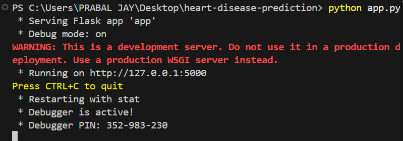

❤️ Heart Disease Prediction
Predict the risk of heart disease with machine learning and interactive visualizations.
Description: A modern web application that predicts the likelihood of heart disease using machine learning.
Built with Flask, scikit-learn, and a visually appealing, responsive interface.
Table of Contents
üìñ About the Project
This project provides an interactive web application for predicting the risk of heart disease based on patient data. It leverages a machine learning model trained on real-world datasets and offers insightful data visualizations, a modern UI, and easy extensibility.
üöÄ Features
- üñ•Ô∏è Interactive Web App
- ü§ñ Machine Learning Model
- üìä Data Visualization
- üé® Attractive UI
- üîÑ Customizable & Extensible
üõ†Ô∏è Technologies
- Python
- Flask
- scikit-learn
- Pandas
- HTML5 & CSS3
- Jupyter Notebook
üóùÔ∏è Key Terms
- Random Forest
- Classification
- Confusion Matrix
- Data Preprocessing
- Model Evaluation
- Visualization
üé¨ Demo Video
üì∏ Output Gallery
 Final App
Final App
 Data Exploration
Data Exploration
 Model Training
Model Training
 Confusion Matrix
Confusion Matrix
 Output Example
Output Example

App Screenshot
 Heart Disease Distribution
Heart Disease Distribution
üìù Usage
- Fill in the form with patient details.
- Click Predict to see the result.
- Explore data visualizations in the
notebooks/folder.
üö¶ How to Start
- Clone the repository:
git clone https://github.com/PrabalJay/heart-disease-prediction.git cd heart-disease-prediction
- Install dependencies:
pip install -r requirements.txt
- Prepare the data:
- Place your dataset in
data/raw/dataset.csv. - Run preprocessing and training scripts:
python src/data_preprocessing.py python src/train_model.py
- Place your dataset in
- Run the app:
python app.py
Visit http://127.0.0.1:5000 in your browser.
üîó Links & Resources
üìÑ License
This project is licensed under the MIT License.
üôè Acknowledgements
⭐ Star this repo if you found it useful!